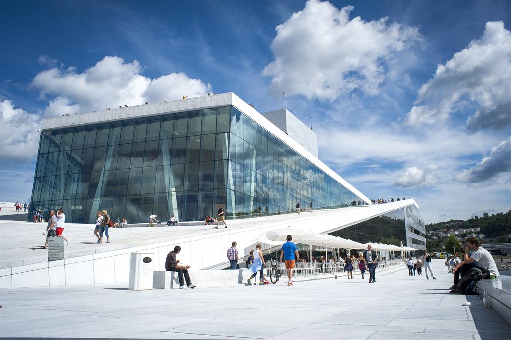
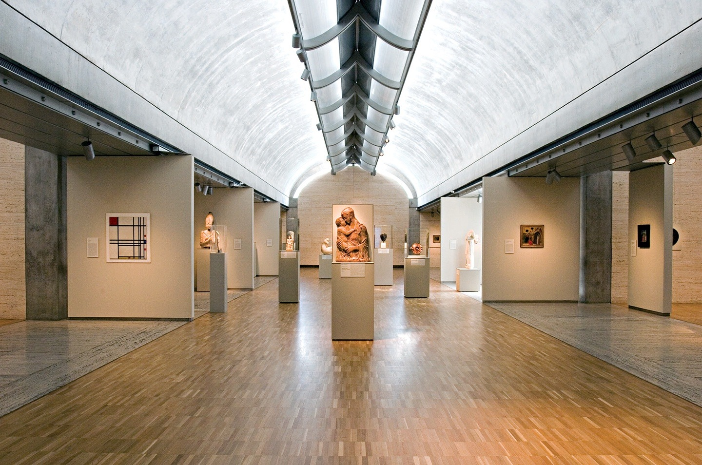

The Hall,
Lit.
You tuned the room for sound. Tonight you negotiate with the sun — proving that daylight reaches the prefunction by the numbers, while the hall stays under your control and not the sky’s.
Session Objectives.
Act II closes tonight. By the end of this session, you should leave with a daylighting strategy you can defend with numbers, not adjectives. Concretely, you will walk away with:
- The two-zone mindset internalized — an auditorium is two daylighting problems wearing one roof. The prefunction must be demonstrably daylit; the hall must be demonstrably protected from daylight. Your aperture strategy succeeds only if it serves both at once.
- sDA and ASE as the language of the act — you can state what each metric measures, the LEED v4 thresholds (sDA ≥ 55%, ASE ≤ 10%), and why a space can pass one and fail the other.
- A shading device you sized, not guessed — you can derive overhang depth from Detroit’s solar altitude angles (Jun 21 noon ≈ 71°, Dec 21 noon ≈ 25°) and match the device type to the facade orientation.
- A named glare condition and a deliberate response — worst hour, worst facade, and the control strategy you chose to defend against it.
- One acoustic–daylight trade-off written into the Decision Log — the place where your Act I acoustic decisions shape where the glass can go.
Run of Show.
Four hours and five minutes, online. Lecture front-loaded so the lab has a clean 65-minute block; the night ends with a short Act II pin-up preview so you know exactly what next Wednesday’s review looks like.
Where We Left Off.
Week 4 set the stage: you placed your 500-seat proscenium auditorium on its Detroit site (42.33°N, 83.05°W), built the LightStanza model, and ran your first solstice sun studies. You committed an initial aperture stance to the Decision Log — which facades get glass, and roughly how much. Tonight we test that stance against climate-based data and refine it.
Two facts from Week 4 do all the work tonight. Keep them in front of you:
The sun is high in summer, low in winter — and that gap is your design.
At 42.3°N, the noon sun climbs to roughly 71° above the horizon on June 21 and sinks to about 25° on December 21. That 46° swing is precisely what a fixed horizontal overhang exploits: deep enough to block the steep summer sun, shallow enough to welcome the low winter sun. Memorize these two numbers — the entire shading calculation hangs on them.
Two Daylighting Problems.
One Roof, Two Briefs.
The instinct “more daylight is better” is wrong for half your building. Sort the program first.
The blackout zone
- The hall is a controlled-luminance room. Performance, projection, and theatrical lighting all demand that you decide how much light is in the room — not the weather. Uncontrolled daylight here is a defect, not an amenity.
- That does not mean zero glass. It means any aperture into the hall must be blackout-capable (motorized shades, light locks at vomitories) or pointed somewhere it cannot wash the stage or screen.
The daylit zone
- The prefunction / lobby is the opposite brief. It is occupied before and after the show, wants connection to time of day and weather, and is the space we will actually measure for sDA and ASE. This is where daylight earns its keep — energy, wayfinding, and the civic gesture of a lit room facing the street.
- Support spaces (restrooms, coat, back-of-house) are daylight-neutral — nice to have, never required.
The Hall
Goal: luminance fully under designer control; no daylight on stage or screen.
Levers: minimal or blackout-capable glazing; light locks at entries; clerestory only if it washes ceiling/acoustic surfaces, never the performance plane.
Measured by: design intent — can you prove the room goes dark on demand?
The Prefunction
Goal: generous, glare-free daylight across occupied hours.
Levers: WWR by facade, glazing height, shading geometry, interior reflectance.
Measured by: climate-based sDA & ASE on the floor plate — the numbers you submit.
Does one aperture strategy serve both zones?
Every glazing decision is graded against this. South glass that daylights the lobby but leaks onto a shared wall with the hall is a failure of coordination, not of daylighting. The strongest submissions draw the boundary between Zone A and Zone B explicitly on the plan, then justify every opening by which zone it serves.
sDA & ASE — The Metrics.
From a Number to a Whole Year.
Daylight factor asks about one overcast moment. sDA and ASE ask about 4,380 occupied hours.
Why climate-based
- The old Daylight Factor (DF) is a single ratio under a uniform overcast sky — no orientation, no sun, no location. It cannot tell a south room from a north one. Useful as a sketch, useless for glare.
- Climate-based daylight modeling (CBDM) runs the actual Detroit weather file across a full year and reports how a grid of sensor points performs over real occupied hours. This is what LightStanza computes, and what LEED v4 rewards.
The two numbers you submit
- sDA (Spatial Daylight Autonomy) — the percentage of floor area that receives at least 300 lux for at least 50% of occupied hours (written sDA300/50%). It answers: is the room usefully daylit? Higher is better.
- ASE (Annual Sunlight Exposure) — the percentage of floor area that receives 1,000 lux or more of direct sun for 250+ hours a year (ASE1000/250h). It answers: is the room over-lit to the point of glare and overheating? Lower is better. ASE is the alarm bell.
sDA ≥ 55% · ASE ≤ 10%
sDA ≥ 55% of the analysis area earns the daylight credit (75% reaches the higher threshold). ASE must stay at or below 10% — cross it and you are presumed to have a glare and solar-gain problem the credit will not forgive. A space can hit high sDA and still fail on ASE: that is the unshaded south window that floods the room. Passing both is the whole game.
What we’re actually measuring
For Act II the number that matters is daylight in the prefunction — that is the occupied, daylit zone we are evaluating. If LightStanza lets you confine the analysis grid to the prefunction floor, do it; we’ll look at how to limit the grid together in the lab. Either way, keep your attention on the prefunction result and don’t let the hall or back-of-house skew what you report.
And remember the model is only as honest as its inputs: sensors at desk/standing height (~30″, 0.76 m), realistic interior reflectances (light ceiling and walls bounce daylight deeper), and occupied hours set to roughly 8 AM–6 PM. If your sDA looks implausibly high, an over-reflective model is the usual culprit.
Shading Geometry.
Size It from the Sun Angle.
An overhang is not a style choice. It is a number you derive from two altitude angles and a window height.
- A horizontal overhang works by cutoff angle: any sun higher than the angle the overhang projects is blocked; any sun lower slips underneath. Tune that angle to fall between the summer and winter noon sun and the device sorts the seasons for you.
- The governing case for a south facade is June 21 at solar noon, when the sun is highest (≈71° at Detroit) and you most want it blocked. Size the overhang to fully shade the glass at that moment.
- Then check December 21 (≈25°): the same overhang should let that low sun reach deep into the room for free winter warmth and light. If it doesn’t, the overhang is too deep.
- P
- required overhang projection (horizontal depth from the glass face)
- Hw
- vertical distance from the window head down to the sill (the glass height the overhang must shade)
- αsummer
- solar altitude at the design shading time — 71° at Detroit, Jun 21 noon
Horizontal overhang
The clean case. Sun is high and due-south at noon, so a horizontal device controls it predictably. Size with the formula above; a light shelf can do double duty — shade below, bounce daylight to the ceiling above.
Vertical fins or setback
The hard case. Morning and evening sun arrives low and nearly horizontal — an overhang is useless against it. Respond with vertical fins, deep reveals, screens, or simply less glass. West is the worst: hot afternoon sun during occupied lobby hours.
No solar device needed
North glass at 42°N sees almost no direct beam sun — only steady, diffuse sky. The gift facade for daylighting: bright and glare-quiet. Your task here is managing diffuse-sky brightness contrast, not blocking the sun.
Toplight, controlled
Skylights and clerestories deliver the most daylight per square foot but the most glare risk. Always pair with a baffle, splay, or north orientation so you admit bounced light, never a direct view of the sun — the lesson the precedents below teach in built form.
Glare & Visual Comfort.
Brightness Is Relative, and So Is Discomfort.
The eye doesn’t mind bright. It minds bright next to dark. Glare is a contrast problem.
- Illuminance vs. luminance. sDA measures illuminance — light landing on the floor. Glare is about luminance — the brightness of surfaces in your field of view. A sunlit window seen against a dim wall is the classic offender even when floor illuminance is fine.
- The contrast rule of thumb. Keep the luminance ratio between a task and its immediate surround within about 3:1, and task-to-remote-background within about 10:1. A bare sunlit window against an interior wall can blow past 100:1.
- DGP — Daylight Glare Probability. The modern annual glare metric, often available in LightStanza. Read it on this scale: < 0.35 imperceptible, 0.35–0.40 perceptible, 0.40–0.45 disturbing, > 0.45 intolerable. If you can export a DGP map, cite the number; if not, argue from luminance contrast and high-ASE locations.
The control menu — outside-in is best
- Exterior fixed — overhangs, fins, screens, deep reveals. Stop the sun before it enters; cheapest energy, no occupant action.
- Glazing-integral — fritted, etched, or diffusing glass; spectrally selective low-e to cut beam intensity while keeping the view.
- Interior adjustable — roller shades and blinds. Necessary backup for the hours fixed devices miss, but they depend on occupants actually using them — assume they won’t.
Your worst ASE cell is your worst glare cell.
Don’t treat glare as a separate study. The floor area that failed ASE — too much direct sun for too many hours — is exactly where an occupant will be squinting. Name that location by facade, hour, and date (“west lobby, 5 PM, June 21”), then point your chosen control at it. That single sentence is what Criterion 4 of the rubric is looking for.
Precedent — Daylit Halls.
Three built works and one toolkit. Each solves a piece of tonight’s problem — keeping the performance volume under control while letting daylight pour into the rooms that want it, and always admitting bounced or diffuse light rather than a raw view of the sun. Steal the strategy, not the shape.

The Lit Foyer, Dark Hall
The exact two-zone diagram, built. A vast glazed foyer wraps the auditorium on the public sides, flooding the lobby with daylight, while the hall itself sits as an opaque oak-clad “wave wall” volume in the center — no daylight reaches the performance chamber.
The glass foyer does the civic, daylit work; the solid hall stays under full lighting control. For your section: let the prefunction be the glazed gesture and keep the hall a sealed object inside it.

The Reflected Vault
Kahn’s cycloid vaults have a continuous slot at the crown, but you never see sky-sun on the art. A perforated aluminum reflector below the slot catches the daylight and throws it up onto the curved concrete, which glows and washes the gallery in soft, indirect “silver” light.
The move: admit toplight, then bounce it off a surface before it reaches the eye. For your roof: any skylight over the lobby should wash a wall or ceiling, never drop a sun patch on the floor.

The Light Leaves
A continuous roof of curved ferro-cement “leaves” — their profile computed so they block all direct sun while reflecting soft daylight down into the galleries from the sky. The shading geometry is the architecture, sized to Houston’s latitude.
The lesson is exactly your shading calc: a fixed device whose shape is derived from the sun angles of its site can deliver glare-free daylight with zero moving parts. For you: defend your overhang depth with the 71°/25° numbers, the way Piano defended his leaf curve.
What you control.
The simulation reports the numbers; you set the four variables it reads. Tonight’s lab is just turning these four dials until sDA and ASE both pass.
Orientation & zoning: put the daylit program (prefunction) on the good facades; bury the blackout program (hall) in the core. This is the highest-leverage move and it’s free.
Aperture: set WWR per facade — generous on north, disciplined and shaded on south, minimal on west.
Shading: the right device for each orientation, sized from the sun, drawn in section.
Reflectance: light interior surfaces push daylight deep and soften contrast — the cheapest glare control you own. For your Decision Log: name which dial you turned and what the numbers did in response.
Lab — Run the Numbers.
Sixty-five minutes, screen-share open. The goal is not a finished package tonight — it is to leave with real sDA/ASE output for your prefunction, a sized overhang, and your worst glare hour identified. Work in your own LightStanza model from Week 4. I’ll circulate; drop a pin on the whiteboard when you hit a wall.
Daylighting module, Detroit weather file
Use the daylighting (climate-based) analysis, not the electric-lighting module — that one waits for Act III. Confirm your location is set to Detroit (42.33°N) so the weather file and sun path are correct. If your @ltu.edu account isn’t connecting to the institutional license, flag me immediately. See the Week 4 LightStanza tutorial on the course hub for setup steps.
Define the analysis zone
Draw the sensor grid over the prefunction floor only. Set sensor height 30″, spacing ~2′, occupied hours 8–6, and realistic reflectances.
- Grid excludes the hall and back-of-house.
- Confirm Detroit location + weather file.
- Screenshot the grid extent over your plan.
Run sDA & ASE
Execute the annual climate-based analysis. Export both heatmaps and read the percentages off the results panel.
- Export sDA map + ASE map as images.
- Annotate each with its numeric % result.
- Compare to sDA ≥ 55%, ASE ≤ 10%. Pass or fail?
Size the overhang
For your primary south (or E/W) aperture, compute projection depth P = Hw / tan(71°). Verify Dec 21 admission at 25°. Sketch it on your section.
- Show the formula, numbers, and result.
- Annotate the device + dimension on your section.
- North aperture? Write why no device is needed.
Find the worst glare hour & respond
If ASE failed, locate the offending cell — facade, hour, date. Re-run with your shading device or a reduced WWR and watch ASE drop. Name the control you chose.
- State the worst condition in one sentence.
- Re-run; capture the improved ASE.
- Start tonight’s Decision Log entry now.
A failed number is content, not a catastrophe.
If ASE comes in at 18% and you can’t fix it in the room left tonight, that’s fine — the rubric rewards a failed result that you diagnosed and proposed a revision for over a passing number you can’t explain. Capture the failing map, write down the cause, and state what you’d change. That is a strong Decision Log entry.
Act II Deliverable.
This is the act’s graded submission — 20 points, 10% of the course, due Wed 06·24 at 11:59 PM via Canvas. Two parts: a single PDF package and a pasted Decision Log text entry. The full rubric and package spec live in the Act II Assignment document; this is the short form so you know where tonight’s lab is taking you.
Post your work-in-progress to the whiteboard first.
Ahead of the Canvas deadline, drop your draft plan, sDA/ASE maps, and shading sketch onto the course Lucidspark whiteboard (linked at the top of this page). We’ll use it for a working discussion — pin questions, compare results across the cohort, and get feedback while there’s still time to revise. The whiteboard is for thinking out loud; Canvas is for the finished package.
The Hall, Lit — Act II Package
Write the cross-system entry while it’s fresh.
The single hardest point to earn is the acoustic–daylight trade-off (Criterion 5). It’s easiest to write tonight, when you can still feel where the glass wanted to go and the STC wall said no. One honest paragraph — “I wanted south glazing on the lobby’s shared wall with the hall, but that wall is carrying my Act I isolation assembly, so I moved the glass to the east bay and accepted a lower morning sDA” — is worth more than a page of description.